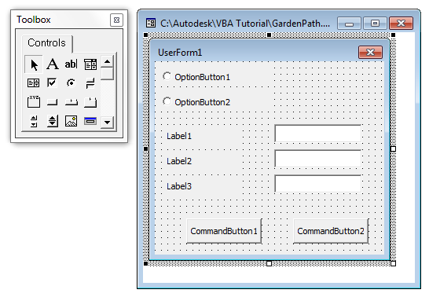

Autodesk AutoCAD 2021: ActiveX Developer's Guide > ActiveX/VBA Tutorial: Design the Garden Path > Tutorial: Designing a Garden Path (VBA/ActiveX) >
A dialog box can be used to get input from a user and then use the values received for the subroutines defined in the project.
A UserForm object is used to represent a dialog box in a VBA project. After a UserForm object has been added to a project, you can use the tools on the Toolbox window to add controls to and select controls on a UserForm object. Once a control tool is clicked, click and drag over the UserForm object to size and position the control. Controls on a UserForm object can be a text box, drop-down list, radio optional buttons, and command buttons among many others. Command buttons are typically used to represent the OK and Cancel buttons of a dialog box.
In the following steps, you learn to insert a UserForm object into the GardenPath project and then add controls to it.
 User Form to insert a new form into the project.
User Form to insert a new form into the project. Two windows are displayed; the Toolbox window and a form editor window for the new UserForm object.

A second option button control is placed and at a default size.
You should place